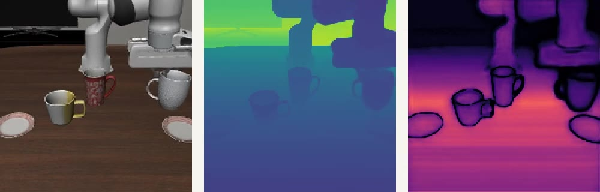

Available now · Authorized to work in Germany · German A1
selected work

What the camera seesHow far the model thinks things areWhere it is unsure
Nota AI · Research intern · Berlin · Jul–Oct 2026
Making VLA experiments trustworthy
Reproduced a VGGT-based 3D-aware vision-language-action policy as the team baseline, then found and fixed defects that had invalidated results: an embedding-cache mismatch, a depth-token ordering bug and evaluation-order dependence in LIBERO.
My part: reproduction, experiment-integrity tooling, rollout recording and failure analysis.
ENERDOT · Data science intern · Seoul · May–Jul 2026
Forecasts that don't cheat
Airflow/MySQL pipelines for electricity-market forecasting. Removed features not yet published at forecast time, fixed a silent lag bug across missing timestamps, and corrected early solar results inflated by shuffled splits. Day-ahead SMP forecast MAE ~14% lower than a 7-day persistence baseline on a two-month held-out set.
My part: Airflow wrapper, availability probe, preprocessing, retraining gate and site mapping; the forecasting framework already existed.
Welfare Compass · Hackathon finalist → team iteration · 2025–26
A welfare-policy assistant for 300+ programs
Started as a RAG MVP that reached the Seoul AI Hackathon finals (top 20 of 181 teams). The team later extended it into a LangGraph ReAct agent that routes between information extraction, hybrid policy retrieval and rule-based eligibility checks.
My part: led the idea and built the MVP's retrieval and generation; in the agent version, the LLM agent and user-profile memory. Teammates owned frontend, backend and MCP.
Experiments compared as equals used different language-embedding caches, created by different transformers versions.
how
Configs looked identical: cached embeddings bypass the language model, so the version difference never showed up in config.
fixed
Fixed in code; comparisons now verify cache provenance.
Nota AI
Depth tokens in the wrong order
found
A reshape grouped neighbouring depth values into one token instead of pairing each cell's depth with its confidence.
how
Attention and gradient analysis missed it; a simple statistic caught it: both input channels had the same mean.
fixed
Fixed, with 32 regression tests that place distinct values at every position.
ENERDOT
Solar results that looked too good
found
Early accuracy was inflated.
how
Traced it to a shuffled split and a training window overlapping the evaluation period.
fixed
Re-split by time and used the honest numbers as the baseline.
research · 4 publications (3 first-author) and 2 Korean patent applications
M.S. thesis · Ewha Womans University · 2025
SPSNet: spectral patch selection for illuminant estimation from 15-band multispectral imagesMean angular error 6–9% lower than the CCNet baseline across four datasets (1,401 images)
Patent applications (pending)
Global Illumination Estimation Method Based on Local Illumination Estimation and Image Processing ApparatusKorean Patent Application No. 10-2024-0164675 · filed 2024
Auto White Balancing Method for Multi-View Video and Image Processing ApparatusKorean Patent Application · filed 2024
Publications
A Preference Analysis of Color: A Pilot Study Comparing the Drama Money Heist Original and Remake VersionsYuna Sim, Hoyoung Yoon · Journal of the Korean Data Analysis Society · Feb 2025
Global Illumination Estimation Using Local Patch SelectionYuna Sim, Hyejin Oh, Jewon Kang · KIBME · Nov 2024
Deep Learning-Based Fast Auto White Balancing Algorithm Development for Multi-View VideoHyejin Oh, Yuna Sim, Jewon Kang · KIBME · Jun 2024
Welding defect detection using synthetic data and object recognition algorithmsYuna Sim, Jewon Kang · IPIU · Feb 2024
on the side
color study · 2025
How do viewers respond to a drama's original and remake color grades?
Six tones measured from drama frames, plotted in CIELAB. A viewer survey and statistical analysis, published in the Journal of the Korean Data Analysis Society. The teal used across this site is one of them.